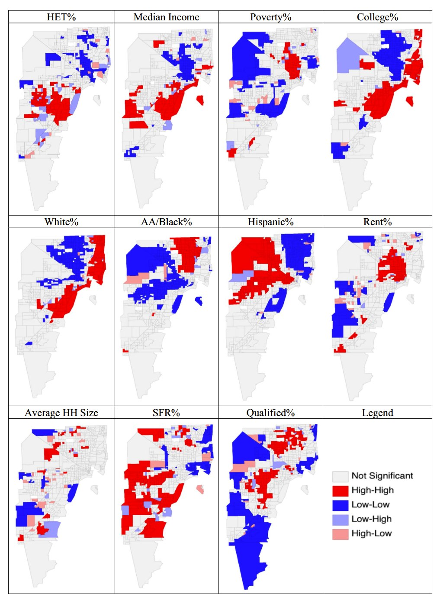

Government agencies
How public agencies map the causes and consequences of flooding.
Tools & Data
The models and datasets behind the lab’s published work, in the state they were actually used. Everything below is public; each repository is linked to the paper it supports.
Interactive
Fuzzy cognitive maps built from stakeholder interviews, rendered as explorable networks. Each map shows how one sector understands the drivers of flood risk and how those drivers connect — drag nodes, zoom, and compare across sectors.
How public agencies map the causes and consequences of flooding.
The same exercise, seen from the private sector.
Community and non-profit framings of flood drivers and interventions.
Source notebook and data: github.com/Koazizi/Fuzzy-Cognative-Maps
Code & data
An agent-based model in which household agents decide whether to adopt structural or rain-catching green stormwater infrastructure, driven by socio-demographics, parcel characteristics, financial constraints, social capital and peer influence, with behavioural constructs estimated from survey data by structural equation modelling. Includes the council-district and parcel shapefiles and the missing-data sensitivity analysis.
Network data and exponential random graph models for collaboration, preparation and response ties among flood-governance organisations across Southeast Texas, separated by issue — infrastructure, precipitation, socio-economic, geographic, economic and population. Includes the coded interview information and ERGM results.
The spatial analysis testing whether household green stormwater infrastructure adoption aligns with flood exposure, combining eligible-parcel exposure, census tracts, council districts and hazard layers.
Modelling
![Flow diagram of the agent-based model. Socio-demographic data from census tracts, spatial parcel characteristics from GIS, behavioural constructs estimated from survey data, and financial constraints all feed a population of household agents distributed on a multi-grid space. Agents receive a baseline adoption score and decision threshold, are influenced by peer network formation and social influence mechanisms, and update behaviour scores through internal dynamics modelled by structural equation modelling.](assets/img/figures/gsi-abm-framework.jpg)

Code and data are shared so that results can be checked and extended. If you use them, please cite the paper they support rather than the repository alone. Questions about a model, a parameter choice or a dataset are welcome — email kazizi@tnstate.edu.
Where a repository does not yet carry an explicit licence file, treat it as “ask first” and get in touch; licences are being added.
Interview transcripts, survey responses with identifying detail, and any data that could re-identify a household or a named organisational contact stay closed. That is a condition of the consent under which people gave them.
Coded, aggregated versions — edge lists, thematic codes, model inputs — are published wherever the consent allows.